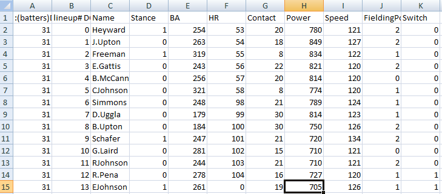

Welcome to the Ribeye3 Modifier project!
Do you love R.B.I. Baseball 3 for the Nintendo Entertainment System? Have you ever wished for a modern-era baseball game with classic mechanics? Are you a fan of retro ball games, but are peeved your expansion team didn't exist back then? You've come to the right place.


The RibEye3 Modifier allows you to create your own modern-day classic ball game. Upload a copy of the original R.B.I. Baseball 3 ROM from 1990 (we don't host ROMs here) and a .csv file that declares the batting and pitching parameters of every player. Our Python app picks apart the original ROM, patches it to a modern 30-team roster, adds in the parameters from your .csv file, and serves you back a .nes file that should be playable in any standard NES emulator.


Stats geeks rejoice! You have the ability to build a balanced baseball game however you see fit. Correlate in-game batting power with WAR? Correlate pitching velocity and curve ability to WHIP? Build a team of all-time all-stars, or all-time losers? It's all up to you!

This project is very much a work-in-progress! Keep checking back for updates and features.
Updates...
Jan 22, 2014 - Added nes-to-csv feature where you can upload an RBI 3 ROM .nes file and receive all of its parameters in a .csv file
Jan 20, 2014 - Clarified error% on help page and .csv template (download a new copy of the .csv). Partially fixed an issue where the post-game billboard gets the team initials wrong. Fixed max number of home runs (99, not 55).
Jan 19, 2014 - Launch.
Notice
This website does not host any Nintendo ROM files. This website and project has no affiliation with Nintendo, Tengen or Major League Baseball.